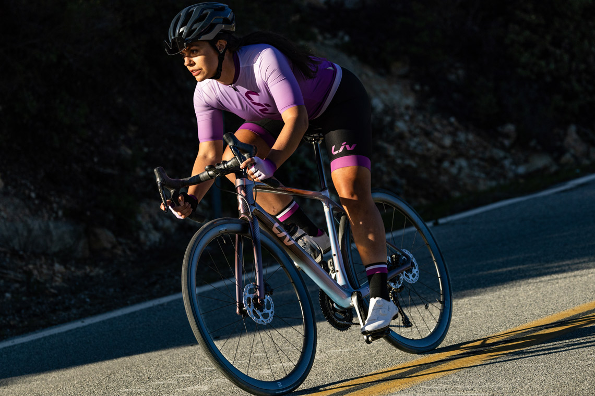
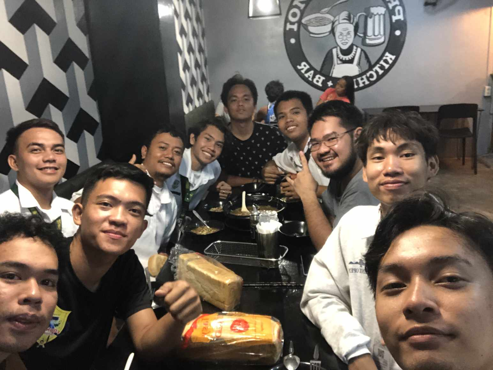

About my self
Hello! My name is Mikerey Bernasor, and I am a second-year college student pursuing a degree in Information Technology. I have a strong passion for technology and problem-solving, which drives me to continuously learn and improve my skills.
My Lifestory
|
|
ChildhoodMy life as a Child was sad because my mother leave me when i was 6 years old to go abroad for our future and I'm happy and thankful of my mother sacrifice |
|
|
Teenage ExperienceMy teenage years was hard because i gain weight to much bullying every day at school |
|
|
Adult ExperienceAnd now as an adult i started thinking about how may i loose some weight and come up my mind to do cycling and this pic was my 1 year hardwork at my cycling journey |
Hobbies
|  |
The Joy of Indoor and Outdoor HobbiesHobbies play an essential role in my life, providing me with relaxation, entertainment, and personal growth. I have a mix of indoor and outdoor interests that keep me engaged and energized. Among my favorite activities are watching old movies and biking, which allows me to explore and stay active. These hobbies bring balance to my routine, helping me unwind from academic responsibilities and enjoy life to the fullest. My indoor hobby, watching old movies, allows me to appreciate classic storytelling and cinematic history. Old films have a unique charm, with strong narratives, memorable performances, and artistic cinematography. They transport me to different eras, offering insights into how life, culture, and filmmaking have evolved over time. Whether it’s a timeless Hollywood classic or an old foreign film, I enjoy experiencing the depth and artistry of past generations. Watching these movies not only entertains me but also broadens my perspective and enhances my appreciation for the film industry. While old movies provide intellectual and artistic enrichment, my love for biking takes me outdoors, where I can enjoy fresh air, nature, and physical activity. Biking is not just a hobby for me; it’s a way to clear my mind and feel free. Whether I’m cycling through my hometown of Nasipit or exploring new routes, biking allows me to experience the beauty of my surroundings while staying fit. It also serves as a great way to relieve stress and disconnect from the digital world. Having a balance between indoor and outdoor hobbies is important because it keeps life interesting and fulfilling. My indoor activities fuel my imagination and curiosity, while biking keeps me physically active and adventurous. Together, these hobbies shape who I am, making my life more enjoyable and meaningful. In the future, I look forward to discovering more interests and continuing to enjoy the things that make me happy. Whether it’s watching a classic movie or going on a long bike ride, my hobbies will always be a big part of my journey. |
Favorites

|
|
Friends
|  |
Meeting this homies is so Greatful they make me comfortable on anything and our vibes was fit |